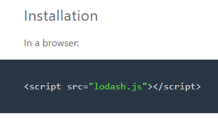

Lodash - this JS library helps in working with arrays of objects, strings, numbers, etc. taking on the main part of the work. The library contains a lot of ready-made solutions for calculations or data enumeration.
1. Using library methods will help you write more reliable and neat code which will have fewer bottlenecks.
2. It is woth learning Lodash to understand the code already written
3. Lodash is sometimes listed in job requirements
4. Using Lodash is considered good coding practice
Adding script file to project directory and html code
Using npm:
In Node.js:
forEach method
map method
In conclusion, Lodash library is a time-tested, comprehensible instrument which has been helping thousands of programmers write better code
Lodash provides out-of-the-box solutions that allow you to write code faster and minimize the possibility of errors, since you do not need to write these methods yourself.
I am very much grateful to you for your patience , Thanks for your Time.
Created by Igor Laptev